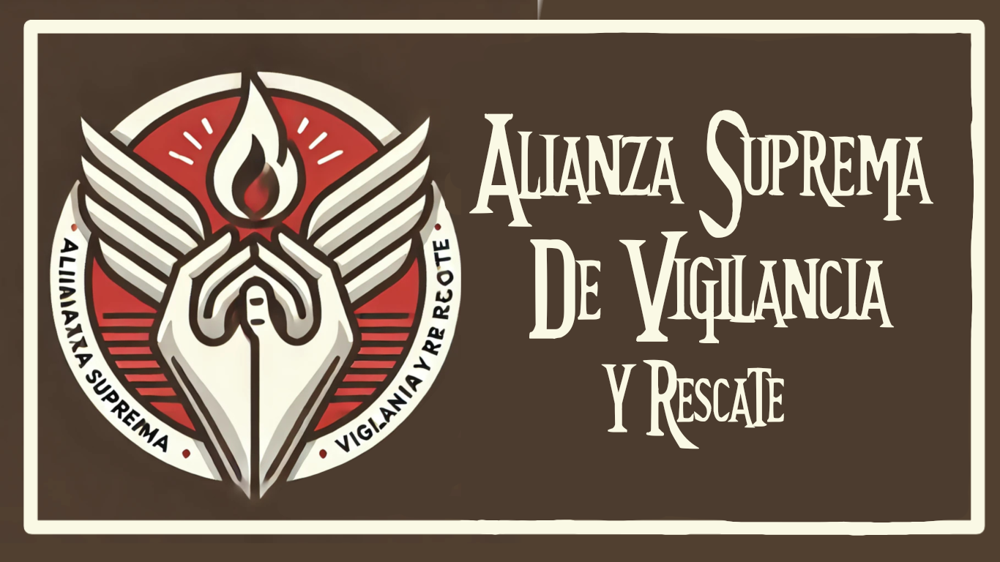

"No buscamos gloria, solo salvar a aquellos que otros han abandonado."
🌟 Introducción
La Alianza Suprema de Vigilancia y Rescate (ASVR) es la última línea de defensa para los olvidados. No buscan el reconocimiento ni la fama, sino cumplir su deber: salvar vidas, sin importar el costo. Desde grandes desastres hasta evacuaciones en zonas de conflicto, ellos son los primeros en llegar y los últimos en irse.
A diferencia de otras organizaciones, ASVR no se involucra en la política heroica ni en la guerra contra los villanos. Su único objetivo es la seguridad y el bienestar de los inocentes. Para ellos, cada vida es importante, incluso si el mundo ha decidido que no lo es.
Descubre cómo actúan los equipos de ASVR en situaciones de crisis.